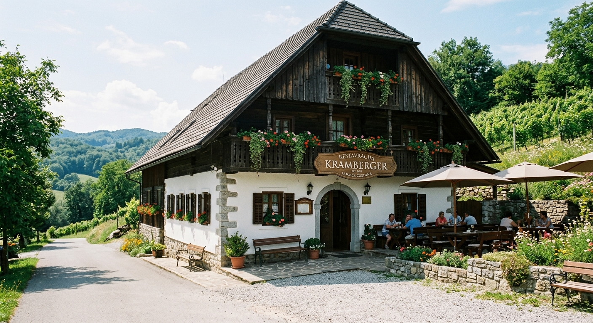

O nas
Naša zgodba
Zgodba Gostilne Kramberger je zgodba o družini, ljubezni do slovenske zemlje in globokem spoštovanju tradicije, ki jo uspešno pišemo že od leta 1991. Vse se je začelo s preprosto, a močno vizijo, ustvariti prostor, kjer se vrhunska domača kulinarika sreča s pristno štajersko gostoljubnostjo in kjer se vsak gost počuti dobrodošlo.
Naša kuhinja vseskozi trdno stoji na temeljih receptov naših babic, saj verjamemo, da prava kulinarična dediščina ne potrebuje bližnjic. Iz tega razloga še danes sami kuhamo prave jušne osnove, pečemo hrustljave pečenke v lastnem soku ter ročno pripravljamo domače ajdove žgance in štruklje. Močno smo povezani z okoliškimi kmetijami in lokalnimi pridelovalci, saj se zavedamo, da se le iz najboljših domačih sestavin lahko rodi pristen, poln okus.
Čeprav ponosno ohranjamo kmečke klasike, kot so krvavice z ajdovo kašo, kmečki krožniki in domača gibanica, naš jedilnik vedno ponuja nekaj za vsakogar. Gostom so tako na voljo tudi sočni zrezki v bogatih omakah, sveže ribe ter pestre pizze. Kramberger namreč ni le prostor za kosilo ali večerjo, temveč je prostor, kjer se ob praznovanjih zbere celotna družina, kjer se ob zvokih nazdravljanja kujejo nepozabni spomini in kjer vsak obiskovalec postane del naše zgodbe. Hvala vam, da ste že več kot tri desetletja z nami, saj vas pri nas vedno čakata dišeča domača hrana in topel nasmeh.
Delovni čas
| Dan | Odprto |
|---|---|
| Ponedeljek | 10:00 - 22:00 |
| Torek | 10:00 - 22:00 |
| Sreda | 10:00 - 22:00 |
| Četrtek | 10:00 - 22:00 |
| Petek | 10:00 - 22:00 |
| Sobota | 10:00 - 22:00 |
| Nedelja | Zaprto |
Naročila se sprejemajo do 21:00. Med prazniki je restavracija zaprta.
Lokacija
Restavracija Kramberger
Glavni trg 1,
2000 Maribor
Slovenija
Za lažjo orientacijo si lahko ogledate našo lokacijo na spodnji karti.